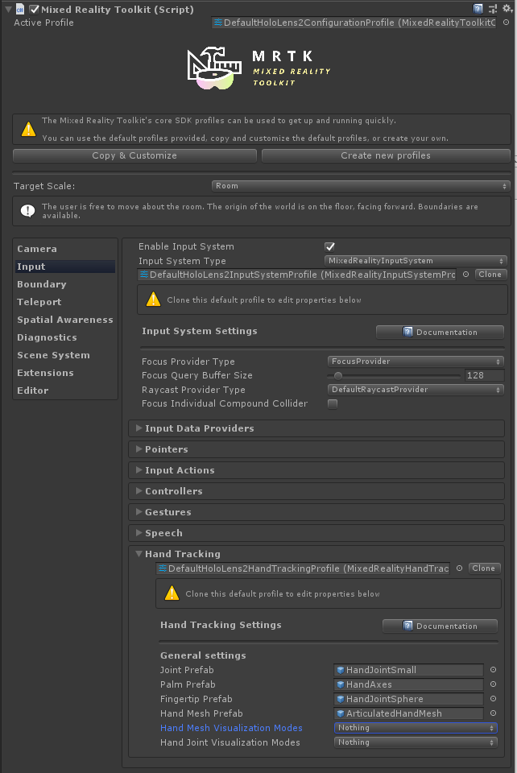
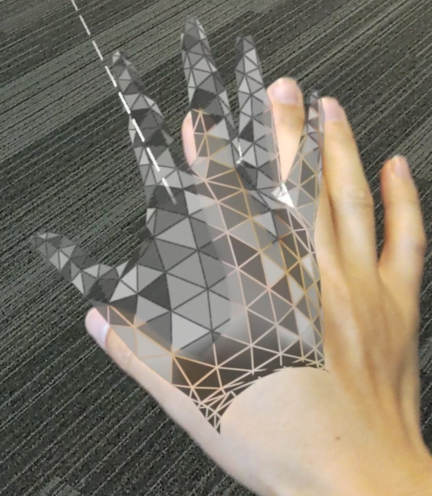

Hand Tracking (手势跟踪)
Hand Tracking Profile
Hand Tracking profile 位于 Input System profile 下。它包含用于自定义手势的设置。 
关节预制体
关节预制体(Joint prefabs)由简单的预制体组成。 Palm 和 Index Finger 关节特别重要，并且具有自己的预制体，而所有其他关节共享相同的预制体。
默认情况下，手部关节预制体是简单的几何基元。如果需要，可以更换它们。如果没有指定预制体，则会创建空的GameObjects代替。
Warning
避免在关节预制体中使用复杂的脚本或耗费较大的渲染，因为关节对象在每帧上都会变化，并且可能会产生巨大的性能成本！
Hand Mesh 预制体
如果手部跟踪设备提供了完全定义的mesh数据，则使用 hand mesh。预制体中可渲染的网格(mesh)被来自设备的数据替换，因此，诸如立方体之类的仿真网格就足够了。预制体的material会用于hand mesh。 
Hand mesh 显示可能会对性能产生明显影响，因此，可以通过取消选中Enable Hand Mesh Visualization选项来完全禁用其显示。
手部可视化设置
可以通过 Hand Mesh Visualization Modes 和 Hand Joint Visualization Modes 设置来分别关闭或打开hand mesh和手关节可视化 。这些设置是特定于应用程序模式的， 意味着可以在编辑器中打开某些功能(例如，以查看编辑器内模拟的关节)，但在部署到设备(in player builds)时相同的功能会关闭。
请注意，通常建议在编辑器中启用手部关节可视化（所以编辑内模拟将显示手关节的位置 ），并具有手关节可视化和hand mesh， player 中的可视化功能已关闭（因为它们会导致性能下降）。
脚本
可以从input system中获取每个单独手部关节的位置和旋转，形式为
MixedRealityPose.
或者，系统允许访问跟随关节的 GameObjects。 这将很有用如果另一个GameObject会持续跟踪一个关节。。
可用关节列在 TrackedHandJoint 枚举中.
Note
失去手部跟踪时，关节物体会被销毁！确保使用关节对象的所有脚本都可以正常处理 null 情况，以避免出错！
访问给定的 Hand Controller
特定的hand controller通常可用，例如在处理输入事件时。在这种情况下，可以使用
IMixedRealityHand 接口直接获取来自设备的关节数据.
Polling Joint Pose from Controller
如果所请求的关节由于某种原因不可用，则 TryGetJoint 函数将返回 false 。在这种情况下，生成的姿势将为 MixedRealityPose.ZeroIdentity。
public void OnSourceDetected(SourceStateEventData eventData)
{
var hand = eventData.Controller as IMixedRealityHand;
if (hand != null)
{
if (hand.TryGetJoint(TrackedHandJoint.IndexTip, out MixedRealityPose jointPose)
{
// ...
}
}
}
Joint Transform from Hand Visualizer
可以从 controller visualizer 获取关节对象。
public void OnSourceDetected(SourceStateEventData eventData)
{
var handVisualizer = eventData.Controller.Visualizer as IMixedRealityHandVisualizer;
if (handVisualizer != null)
{
if (handVisualizer.TryGetJointTransform(TrackedHandJoint.IndexTip, out Transform jointTransform)
{
// ...
}
}
}
简化的关节数据访问
如果未提供特定的controller，则将提供 utility classes，以方便访问手部关节数据。这些功能从当前跟踪的第一个可用手部设备请求关节数据。
Polling Joint Pose from HandJointUtils
HandJointUtils 是一个静态类，它查询第一个活动的手部设备.
if (HandJointUtils.TryGetJointPose(TrackedHandJoint.IndexTip, Handedness.Right, out MixedRealityPose pose))
{
// ...
}
Joint Transform from Hand Joint Service
IMixedRealityHandJointService 保留了一组永久的 GameObjects 来跟踪关节.
IMixedRealityHandJointService handJointService = null;
if (CoreServices.InputSystem != null)
{
var dataProviderAccess = CoreServices.InputSystem as IMixedRealityDataProviderAccess;
if (dataProviderAccess != null)
{
handJointService = dataProviderAccess.GetDataProvider<IMixedRealityHandJointService>();
}
}
if (handJointService != null)
{
Transform jointTransform = handJointService.RequestJointTransform(TrackedHandJoint.IndexTip, Handedness.Right);
// ...
}
Hand Tracking Events
如果不希望直接从controllers获取数据，input system 也提供事件。
Joint Events
IMixedRealityHandJointHandler 处理关节位置的更新.
public class MyHandJointEventHandler : IMixedRealityHandJointHandler
{
public Handedness myHandedness;
void IMixedRealityHandJointHandler.OnHandJointsUpdated(InputEventData<IDictionary<TrackedHandJoint, MixedRealityPose>> eventData)
{
if (eventData.Handedness == myHandedness)
{
if (eventData.InputData.TryGetValue(TrackedHandJoint.IndexTip, out MixedRealityPose pose))
{
// ...
}
}
}
}
Mesh Events
IMixedRealityHandMeshHandler 处理全关节hand mesh的更改.
请注意，默认情况下不启用hand mesh.
public class MyHandMeshEventHandler : IMixedRealityHandMeshHandler
{
public Handedness myHandedness;
public Mesh myMesh;
public void OnHandMeshUpdated(InputEventData<HandMeshInfo> eventData)
{
if (eventData.Handedness == myHandedness)
{
myMesh.vertices = eventData.InputData.vertices;
myMesh.normals = eventData.InputData.normals;
myMesh.triangles = eventData.InputData.triangles;
if (eventData.InputData.uvs != null && eventData.InputData.uvs.Length > 0)
{
myMesh.uv = eventData.InputData.uvs;
}
// ...
}
}
}
已知的问题
.NET Native
当前，使用.NET后端的Master版本存在一个已知问题。在.NET本机中，无法使用 Marshal.GetObjectForIUnknown将IInspectable指针从native 编列为 managed code 。MRTK使用它来获取SpatialCoordinateSystem，以便从平台接收手部和眼数据。
我们在the native Mixed Reality Toolkit repo中提供了DLL源作为解决此问题的替代方法。请按照README文件中的说明进行操作，并将生成的二进制文件复制到Unity assets中的Plugins文件夹中。之后，MRTK中提供的WindowsMixedRealityUtilities脚本将为您处理该替代方法。
如果您要创建自己的DLL或在现有的DLL中包含此替代方法，该替代方法的核心是：
extern "C" __declspec(dllexport) void __stdcall MarshalIInspectable(IUnknown* nativePtr, IUnknown** inspectable)
{
*inspectable = nativePtr;
}
及其在您的 C# Unity代码中的用法:
[DllImport("DotNetNativeWorkaround.dll", EntryPoint = "MarshalIInspectable")]
private static extern void GetSpatialCoordinateSystem(IntPtr nativePtr, out SpatialCoordinateSystem coordinateSystem);
private static SpatialCoordinateSystem GetSpatialCoordinateSystem(IntPtr nativePtr)
{
try
{
GetSpatialCoordinateSystem(nativePtr, out SpatialCoordinateSystem coordinateSystem);
return coordinateSystem;
}
catch
{
UnityEngine.Debug.LogError("Call to the DotNetNativeWorkaround plug-in failed. The plug-in is required for correct behavior when using .NET Native compilation");
return Marshal.GetObjectForIUnknown(nativePtr) as SpatialCoordinateSystem;
}
}